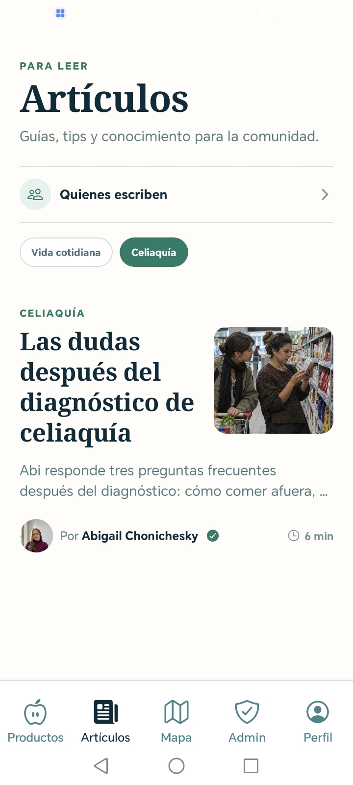
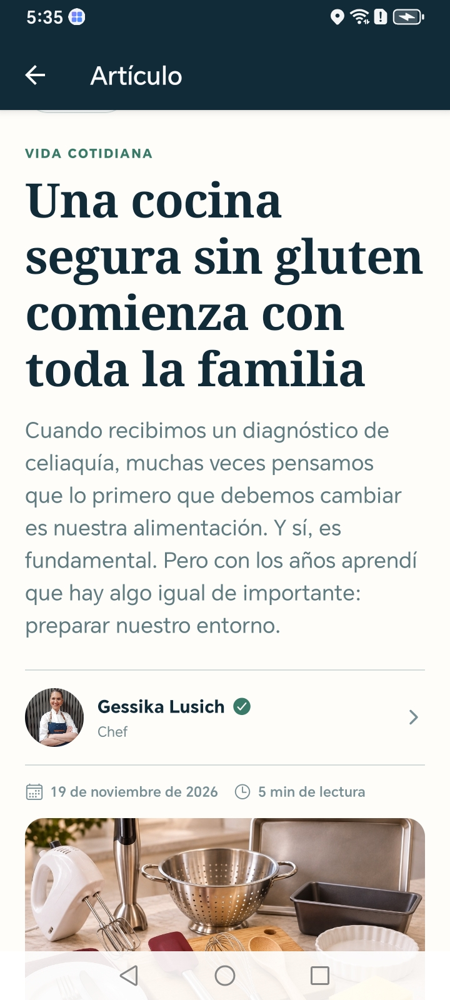
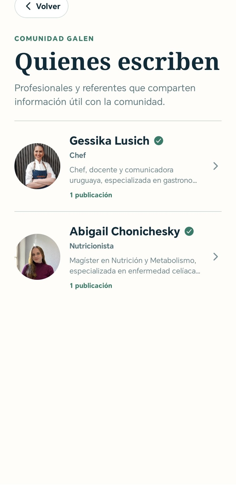
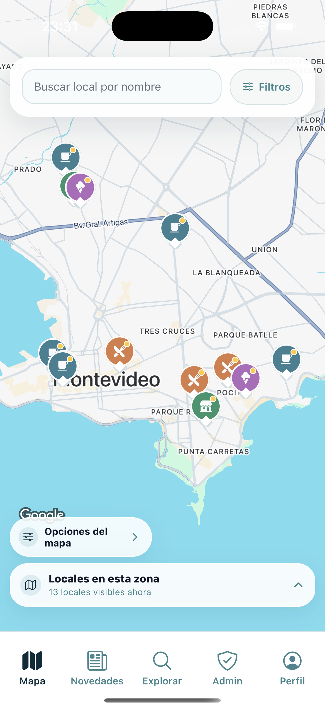

Entender la celiaquía
Información y respuestas a dudas que aparecen después del diagnóstico.
Ahora también podés leer y aprender en Galen. Descubrí artículos de profesionales y referentes, junto a los productos y lugares que ya consultás en la app.
Descargá la app gratisPara iPhone y Android · Hecha en Uruguay
Conocé la nueva sección

YA DISPONIBLE · ARTÍCULOS
01 / PARA LEERUn espacio dentro de Galen para encontrar respuestas, aprender y sumar herramientas. Con artículos sobre nutrición, cocina segura, celiaquía y experiencias de la comunidad.
Información y respuestas a dudas que aparecen después del diagnóstico.
Hábitos y consejos prácticos para organizar una cocina sin gluten.
Miradas de personas que conocen de cerca la vida sin gluten.

LAS PRIMERAS VOCES
Los primeros artículos llegan de la mano de Abigail Chonichesky, nutricionista especializada en enfermedad celíaca, y Gessika Lusich, chef y directora de By Gessi Cocina Inclusiva.
Se seguirán sumando profesionales, referentes y nuevas voces para compartir conocimientos con la comunidad.
TODO EN GALEN
Buscá productos y marcas, y consultá el estado de su registro en RUNAEV.
Conocé la fuente oficial ↗Galen facilita la consulta: no certifica productos ni reemplaza la información del envase o el asesoramiento profesional.
Explorá el mapa, consultá información de locales y leé reseñas de la comunidad.
